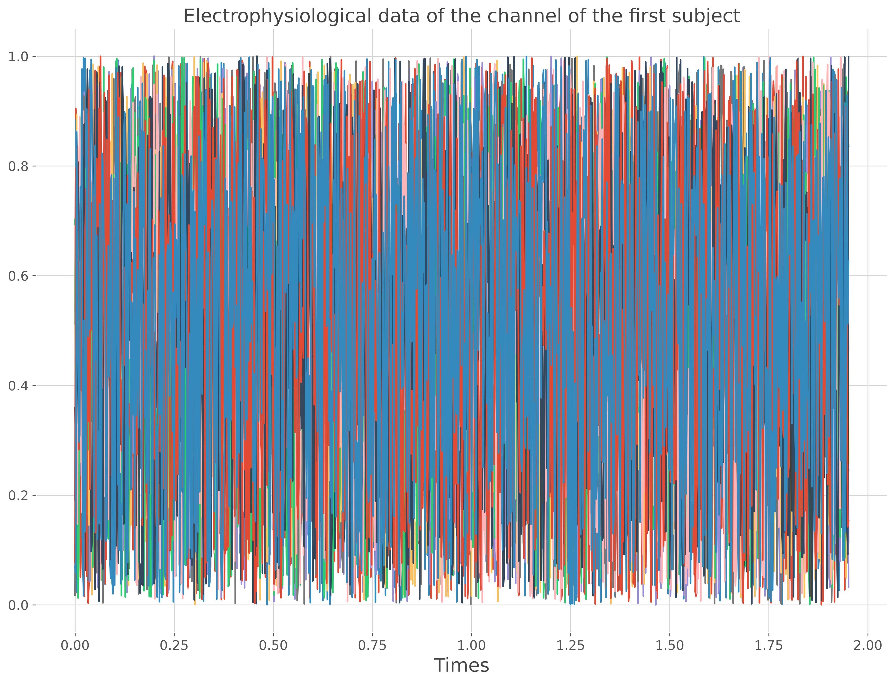
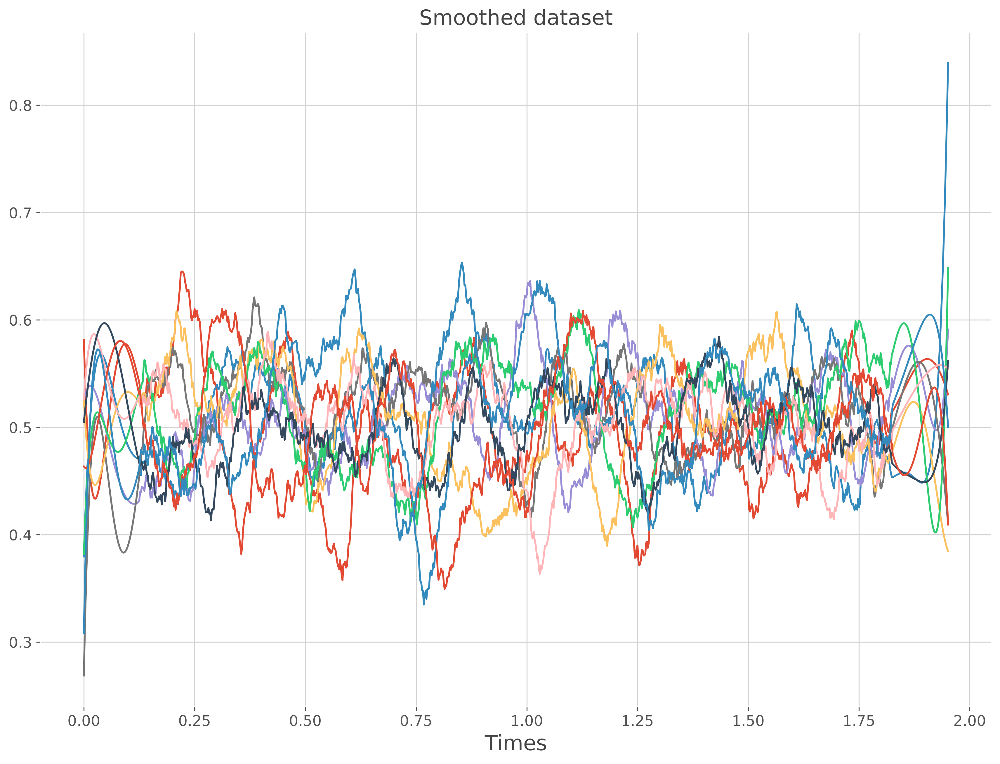
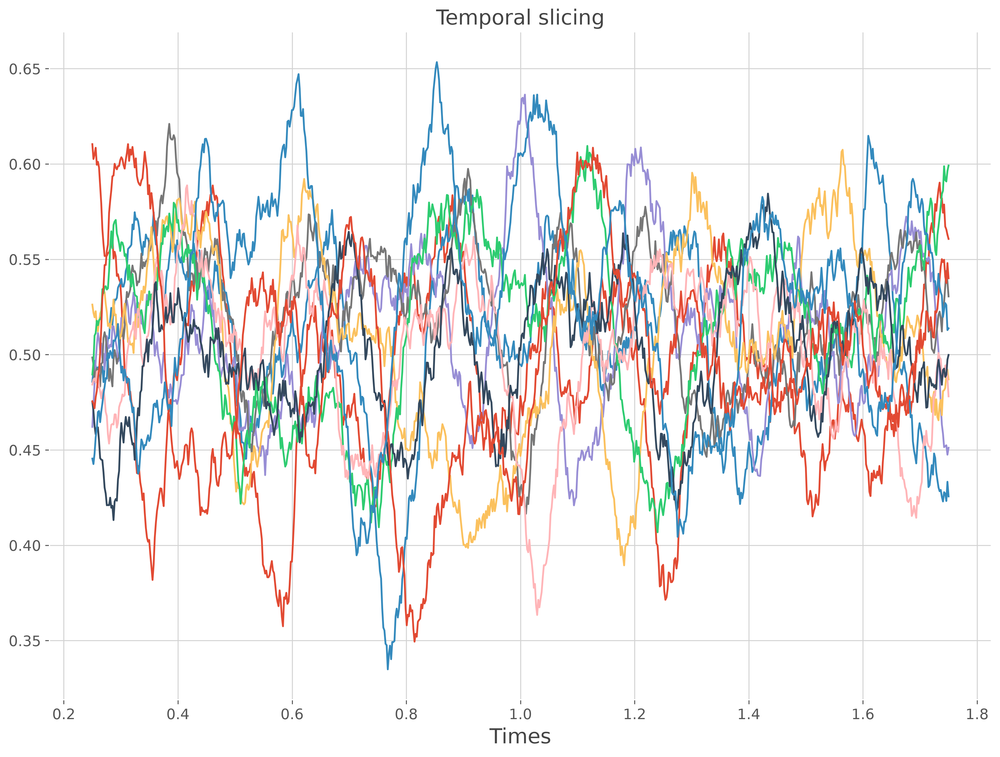

Note
Go to the end to download the full example code.
Build an electrophysiological dataset#
In Frites, a dataset is a structure for grouping the electrophysiological data (e.g MEG / EEG / Intracranial) coming from multiple subjects. In addition, some basic operations can also be performed (like slicing, smoothing etc.). In this example we illutrate how to define a dataset using NumPy arrays.
import numpy as np
from frites.dataset import DatasetEphy
from frites import set_mpl_style
import matplotlib.pyplot as plt
set_mpl_style()
Create artificial data#
We start by creating some random data for several subjects. To do that, each subject is going have a 3 dimensional array of shape (n_epochs, n_channels, n_times). Then, all of the arrays are grouped together in a list of length (n_subjects,)
n_subjects = 5
n_epochs = 10
n_channels = 5
n_times = 1000
sf = 512
x, ch = [], []
for k in range(n_subjects):
# generate single subject data
x_suj = np.random.rand(n_epochs, n_channels, n_times)
# generate some random channel names
ch_suj = np.array([f"ch_{r}" for r in range(n_channels)])
# concatenate in a list
x.append(x_suj)
ch.append(ch_suj)
# finally lets create a time vector
times = np.arange(n_times) / sf
Create the dataset#
The creation of the dataset is performed using the class
frites.dataset.DatasetEphy

<xarray.DataArray 'subject_0' (trials: 10, roi: 5, times: 1000)> Size: 400kB
array([[[0.53525707, 0.90404425, 0.50239657, ..., 0.93194298,
0.89350775, 0.11324662],
[0.73160793, 0.29004464, 0.80680547, ..., 0.88825555,
0.15057972, 0.58812203],
[0.75361481, 0.10592288, 0.04941424, ..., 0.81163535,
0.74603077, 0.67833738],
[0.45415712, 0.86505071, 0.04861214, ..., 0.2745108 ,
0.52077885, 0.50232041],
[0.77669551, 0.94562337, 0.46314071, ..., 0.28179303,
0.66650258, 0.49105171]],
[[0.19116441, 0.88396212, 0.02326298, ..., 0.60838277,
0.80872933, 0.83793753],
[0.60574603, 0.08176632, 0.07688607, ..., 0.03591677,
0.18017182, 0.90936556],
[0.88436132, 0.81578414, 0.71476586, ..., 0.09606063,
0.51842667, 0.3543304 ],
[0.36606606, 0.22109795, 0.84747532, ..., 0.01686568,
0.85415056, 0.52684837],
[0.30038095, 0.88395206, 0.34411368, ..., 0.62978376,
...
0.1422571 , 0.15298784],
[0.3772165 , 0.32078659, 0.0231663 , ..., 0.28225945,
0.94399632, 0.8281066 ],
[0.86911096, 0.98701422, 0.51447722, ..., 0.35207983,
0.47159098, 0.18437271],
[0.27933554, 0.30301497, 0.74777828, ..., 0.37385757,
0.32007632, 0.78155585],
[0.96162788, 0.10924056, 0.46835825, ..., 0.24563268,
0.52545235, 0.53250025]],
[[0.06952844, 0.05756135, 0.86240301, ..., 0.92844066,
0.51202 , 0.6265961 ],
[0.17265854, 0.02639789, 0.87635178, ..., 0.09962254,
0.78924694, 0.08159976],
[0.95536759, 0.63370801, 0.77252472, ..., 0.0157887 ,
0.72192841, 0.96037895],
[0.0286734 , 0.90740663, 0.2855858 , ..., 0.78296645,
0.63088938, 0.45277063],
[0.62271406, 0.32320557, 0.85976955, ..., 0.58101405,
0.23693209, 0.0462242 ]]], shape=(10, 5, 1000))
Coordinates:
* trials (trials) int64 80B 0 1 2 3 4 5 6 7 8 9
subject (trials) int64 80B 0 0 0 0 0 0 0 0 0 0
* roi (roi) <U4 80B 'ch_0' 'ch_1' 'ch_2' 'ch_3' 'ch_4'
agg_ch (roi) int64 40B 0 0 0 0 0
* times (times) float64 8kB 0.0 0.001953 0.003906 ... 1.947 1.949 1.951
Attributes:
__version__: 0.4.6
modality: electrophysiology
dtype: SubjectEphy
y_dtype: none
z_dtype: none
mi_type: none
mi_repr: none
sfreq: 512.0
agg_ch: 1
multivariate: 0
<xarray.DataArray 'subject_1' (trials: 10, roi: 5, times: 1000)> Size: 400kB
array([[[0.6226517 , 0.82421794, 0.28428344, ..., 0.65719648,
0.41038518, 0.21414399],
[0.55713887, 0.28479517, 0.4313195 , ..., 0.42556767,
0.20456613, 0.06760491],
[0.6644721 , 0.4040809 , 0.42382495, ..., 0.39978878,
0.7447437 , 0.96199139],
[0.42449838, 0.59314358, 0.27827526, ..., 0.21949789,
0.37932471, 0.12583498],
[0.341375 , 0.45898639, 0.99978496, ..., 0.90337754,
0.88765144, 0.79509819]],
[[0.13507748, 0.42215434, 0.79111004, ..., 0.89629261,
0.53969568, 0.83165243],
[0.22167036, 0.86723811, 0.43822929, ..., 0.64621745,
0.42268925, 0.28155454],
[0.52131344, 0.42065763, 0.89394277, ..., 0.79553357,
0.33453149, 0.10831612],
[0.49636419, 0.0148667 , 0.30748066, ..., 0.65062743,
0.06808383, 0.57450253],
[0.60556715, 0.91077433, 0.80758123, ..., 0.50320463,
...
0.91438003, 0.40562198],
[0.07295684, 0.21980733, 0.69708621, ..., 0.94486292,
0.39238645, 0.95920698],
[0.43313229, 0.7301843 , 0.15804005, ..., 0.59332112,
0.26237171, 0.31039835],
[0.07708621, 0.81475846, 0.60230857, ..., 0.52396698,
0.61981513, 0.61128555],
[0.60423346, 0.16303558, 0.23544376, ..., 0.05363134,
0.87618747, 0.44162994]],
[[0.69180697, 0.91569978, 0.46260435, ..., 0.24172837,
0.01680803, 0.9655565 ],
[0.323027 , 0.95864388, 0.84541827, ..., 0.87812543,
0.105274 , 0.21825455],
[0.31343561, 0.58720458, 0.997357 , ..., 0.03536821,
0.86811813, 0.02784481],
[0.99651345, 0.92535954, 0.85922872, ..., 0.48237778,
0.13342263, 0.62859324],
[0.67284337, 0.9459099 , 0.13853828, ..., 0.21462449,
0.29577661, 0.84250419]]], shape=(10, 5, 1000))
Coordinates:
* trials (trials) int64 80B 0 1 2 3 4 5 6 7 8 9
subject (trials) int64 80B 1 1 1 1 1 1 1 1 1 1
* roi (roi) <U4 80B 'ch_0' 'ch_1' 'ch_2' 'ch_3' 'ch_4'
agg_ch (roi) int64 40B 0 0 0 0 0
* times (times) float64 8kB 0.0 0.001953 0.003906 ... 1.947 1.949 1.951
Attributes:
__version__: 0.4.6
modality: electrophysiology
dtype: SubjectEphy
y_dtype: none
z_dtype: none
mi_type: none
mi_repr: none
sfreq: 512.0
agg_ch: 1
multivariate: 0
<xarray.DataArray 'subject_2' (trials: 10, roi: 5, times: 1000)> Size: 400kB
array([[[0.21776986, 0.58724972, 0.9876133 , ..., 0.11737878,
0.90307071, 0.97904516],
[0.95642065, 0.8968389 , 0.52146609, ..., 0.43771421,
0.48023904, 0.87842861],
[0.78758502, 0.72026982, 0.15289461, ..., 0.03275316,
0.57316192, 0.90106986],
[0.39676152, 0.6682967 , 0.17773763, ..., 0.29322536,
0.00461906, 0.86574002],
[0.69342261, 0.57497745, 0.7496044 , ..., 0.57906384,
0.67349924, 0.63558372]],
[[0.04403379, 0.36062995, 0.71338395, ..., 0.15883801,
0.48271453, 0.91753837],
[0.19486562, 0.55920335, 0.24154524, ..., 0.7598431 ,
0.09594817, 0.38924385],
[0.90151681, 0.68572495, 0.32216237, ..., 0.50552581,
0.18051792, 0.65497264],
[0.48369291, 0.47526173, 0.49059817, ..., 0.92782791,
0.61319985, 0.61561896],
[0.14988357, 0.78556549, 0.14568252, ..., 0.7480263 ,
...
0.73924162, 0.15277334],
[0.49771084, 0.26201628, 0.53141813, ..., 0.82417916,
0.59715007, 0.22299349],
[0.71821249, 0.53824605, 0.12980142, ..., 0.87982573,
0.41649956, 0.58376354],
[0.46739623, 0.50333786, 0.6603223 , ..., 0.38221256,
0.84739776, 0.5394097 ],
[0.66937494, 0.61731263, 0.47059485, ..., 0.77222142,
0.68952733, 0.38284233]],
[[0.19843802, 0.74518732, 0.11686817, ..., 0.80516883,
0.29791792, 0.88384893],
[0.69440321, 0.26931728, 0.10386718, ..., 0.16586781,
0.62735346, 0.3133154 ],
[0.71662727, 0.80711422, 0.43018423, ..., 0.90505901,
0.67294766, 0.25427828],
[0.93188277, 0.67638396, 0.66752566, ..., 0.86257219,
0.78585522, 0.86425687],
[0.26993482, 0.42351381, 0.63561855, ..., 0.50272661,
0.68693019, 0.1843027 ]]], shape=(10, 5, 1000))
Coordinates:
* trials (trials) int64 80B 0 1 2 3 4 5 6 7 8 9
subject (trials) int64 80B 2 2 2 2 2 2 2 2 2 2
* roi (roi) <U4 80B 'ch_0' 'ch_1' 'ch_2' 'ch_3' 'ch_4'
agg_ch (roi) int64 40B 0 0 0 0 0
* times (times) float64 8kB 0.0 0.001953 0.003906 ... 1.947 1.949 1.951
Attributes:
__version__: 0.4.6
modality: electrophysiology
dtype: SubjectEphy
y_dtype: none
z_dtype: none
mi_type: none
mi_repr: none
sfreq: 512.0
agg_ch: 1
multivariate: 0
<xarray.DataArray 'subject_3' (trials: 10, roi: 5, times: 1000)> Size: 400kB
array([[[0.27484089, 0.11722118, 0.73666012, ..., 0.12442249,
0.70340785, 0.21597358],
[0.66821144, 0.46271755, 0.99138652, ..., 0.76707329,
0.03878764, 0.09405087],
[0.44655442, 0.99634388, 0.08349022, ..., 0.98021804,
0.4910746 , 0.84922585],
[0.66522228, 0.75708785, 0.61977595, ..., 0.68131989,
0.33421452, 0.35425793],
[0.66572644, 0.42937864, 0.80495722, ..., 0.31955936,
0.27662649, 0.79164331]],
[[0.2448979 , 0.23391695, 0.19222137, ..., 0.60631182,
0.04468354, 0.31005514],
[0.57432932, 0.79702601, 0.20548555, ..., 0.40532524,
0.43846232, 0.76783515],
[0.19199654, 0.61491712, 0.11992644, ..., 0.78086133,
0.35170584, 0.06596371],
[0.45435686, 0.42827149, 0.75531823, ..., 0.57123004,
0.88458596, 0.14109678],
[0.89127385, 0.23474509, 0.93650058, ..., 0.27851699,
...
0.21312804, 0.39678959],
[0.0338472 , 0.91886871, 0.43112903, ..., 0.52340546,
0.73548903, 0.98981321],
[0.68084315, 0.32578048, 0.00423282, ..., 0.71746841,
0.36746123, 0.4098826 ],
[0.85447069, 0.99881163, 0.68174975, ..., 0.00506278,
0.876055 , 0.27475058],
[0.4329837 , 0.54200339, 0.51328365, ..., 0.21264951,
0.74785176, 0.78251502]],
[[0.01027822, 0.97447718, 0.92127886, ..., 0.88037244,
0.81299361, 0.24406167],
[0.91684703, 0.92134191, 0.17187039, ..., 0.7337439 ,
0.24584794, 0.17518721],
[0.3926423 , 0.92625031, 0.63635179, ..., 0.88632083,
0.81982371, 0.47538981],
[0.85482614, 0.19672312, 0.95818328, ..., 0.60131525,
0.87420672, 0.75128022],
[0.09667882, 0.97641521, 0.06003241, ..., 0.61777137,
0.33593841, 0.57938191]]], shape=(10, 5, 1000))
Coordinates:
* trials (trials) int64 80B 0 1 2 3 4 5 6 7 8 9
subject (trials) int64 80B 3 3 3 3 3 3 3 3 3 3
* roi (roi) <U4 80B 'ch_0' 'ch_1' 'ch_2' 'ch_3' 'ch_4'
agg_ch (roi) int64 40B 0 0 0 0 0
* times (times) float64 8kB 0.0 0.001953 0.003906 ... 1.947 1.949 1.951
Attributes:
__version__: 0.4.6
modality: electrophysiology
dtype: SubjectEphy
y_dtype: none
z_dtype: none
mi_type: none
mi_repr: none
sfreq: 512.0
agg_ch: 1
multivariate: 0
<xarray.DataArray 'subject_4' (trials: 10, roi: 5, times: 1000)> Size: 400kB
array([[[0.7656045 , 0.05053638, 0.99754485, ..., 0.95335172,
0.5788796 , 0.29139989],
[0.51682225, 0.36444708, 0.62818007, ..., 0.6355037 ,
0.93045786, 0.34023885],
[0.18720436, 0.73320301, 0.05804614, ..., 0.24592229,
0.90324031, 0.35898838],
[0.54763752, 0.90303214, 0.32884094, ..., 0.73709525,
0.80050063, 0.24828481],
[0.89050572, 0.25374395, 0.34521201, ..., 0.00858625,
0.19882708, 0.46291911]],
[[0.92297623, 0.00559588, 0.12891825, ..., 0.84221377,
0.31422572, 0.48157728],
[0.57089767, 0.02812589, 0.65511751, ..., 0.28034522,
0.0387194 , 0.60226164],
[0.20376253, 0.68499026, 0.32053564, ..., 0.45314391,
0.11603825, 0.13037216],
[0.19290648, 0.66385055, 0.49173663, ..., 0.71865936,
0.99136423, 0.47518236],
[0.5022024 , 0.88138976, 0.95937764, ..., 0.04497509,
...
0.67656491, 0.38513726],
[0.75046225, 0.02662174, 0.19568552, ..., 0.31807216,
0.76267582, 0.27216786],
[0.89686082, 0.19306811, 0.44585047, ..., 0.41061865,
0.78709959, 0.47438681],
[0.66926729, 0.99161419, 0.01896266, ..., 0.46087072,
0.54550167, 0.69404198],
[0.45036156, 0.08921504, 0.1890465 , ..., 0.16500208,
0.50642976, 0.01874647]],
[[0.51748192, 0.67547257, 0.95384343, ..., 0.98960301,
0.55060659, 0.21135727],
[0.27700468, 0.67307756, 0.80843318, ..., 0.34454633,
0.13994967, 0.93283239],
[0.037782 , 0.63508146, 0.9125745 , ..., 0.1567181 ,
0.48630129, 0.42530774],
[0.58801726, 0.63688667, 0.34326685, ..., 0.27192547,
0.91758749, 0.52274463],
[0.45380056, 0.78432347, 0.09169052, ..., 0.54986173,
0.87839882, 0.37246592]]], shape=(10, 5, 1000))
Coordinates:
* trials (trials) int64 80B 0 1 2 3 4 5 6 7 8 9
subject (trials) int64 80B 4 4 4 4 4 4 4 4 4 4
* roi (roi) <U4 80B 'ch_0' 'ch_1' 'ch_2' 'ch_3' 'ch_4'
agg_ch (roi) int64 40B 0 0 0 0 0
* times (times) float64 8kB 0.0 0.001953 0.003906 ... 1.947 1.949 1.951
Attributes:
__version__: 0.4.6
modality: electrophysiology
dtype: SubjectEphy
y_dtype: none
z_dtype: none
mi_type: none
mi_repr: none
sfreq: 512.0
agg_ch: 1
multivariate: 0
Data smoothing#
If you have MNE-Python installed, you can also smooth the data using
frites.dataset.DatasetEphy.savgol_filter. One important thing is
that operations are performed inplace, which means that once launched, the
data are modified inside the dataset without copy
# high cut-off frequency at 4Hz
dt.savgol_filter(4)
plt.plot(dt.times, dt.x[0][:, 0, :].T)
plt.xlabel('Times')
plt.title('Smoothed dataset')
plt.show()

Temporal slicing#
The dataset also supports some basic slicing operations through time. Slicing is still performed inplace

Total running time of the script: (0 minutes 3.949 seconds)
Estimated memory usage: 484 MB